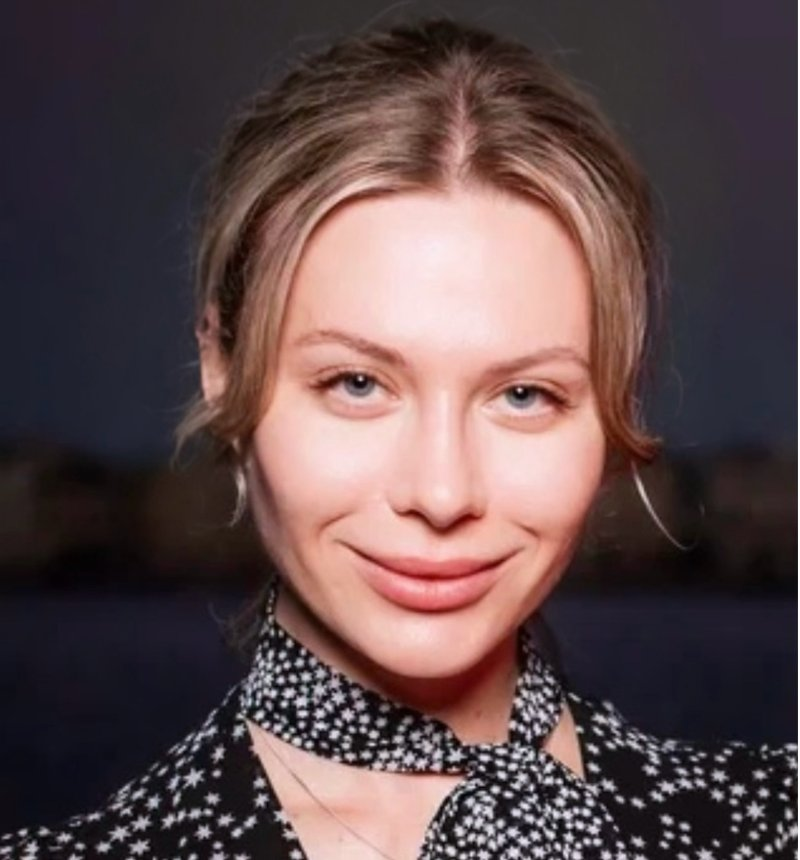
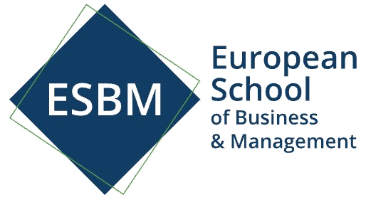

Индивидуальное сопровождение для людей, ценящих своё время и здоровье.

Я — клинический диетолог, эксперт в области превентивной медицины и долголетия, амбассадор Global Wellness и консультант в HealthTech & MedTech. Уже более десяти лет я помогаю людям улучшать своё здоровье, предотвращая болезни до их появления.
Мой путь начался с клинической диетологии: я окончила Первый медицинский факультет Карлова университета в Праге, затем получила MBA в управлении здравоохранением. Много лет я работала с пациентами, изучала основы долголетия, создавала нутриционные и восстановительные программы в премиальной реабилитационной клинике HIVE и сети приватных медицинских центров American Medical Centers, а также получила опыт работы с биологическими добавками в компании Health Labs Care.
Со временем мне стало тесно в рамках исключительно клинической практики. Я всё больше видела, что классическая медицина реагирует на последствия, а не предотвращает причины заболеваний. Так я пришла в сферу цифрового здравоохранения, где медицина соединяется с технологиями. В Чехии я стала одной из первых, кто внедрял персонализированные решения для здоровья на базе телемедицинских SaaS-систем.
Важным этапом стала работа с израильской компанией Biognostica, разработавшей технологию перекрёстного анализа крови, которая позволяет глубже интерпретировать результаты лабораторных исследований. Этот опыт сформировал мой подход к здоровью как к системе, которой можно управлять и улучшать.
Так появился мой эксклюзивный проект «Health as a Project» — методология, в которой здоровье становится структурированной системой с понятными метриками, стратегией улучшения и прогнозируемыми результатами. Всё так же, как управляют успешными компаниями, только объект — человеческий организм.
Сегодня я создаю персональные программы долголетия для частных клиентов по всему миру и консультирую проекты в HealthTech и MedTech. Моя глобальная цель — помогать людям жить дольше, активнее и качественнее, предотвращая болезни до их появления.

Многие симптомы — это сигналы организма о скрытых нарушениях, которые не всегда видны в стандартных анализах.
Часто связана с дефицитом микронутриентов, нарушением работы щитовидной железы или митохондриальной дисфункцией.
Лишний вес или резкое похудение могут указывать на инсулинорезистентность, гормональные сдвиги или хроническое воспаление.
Перепады настроения, раздражительность, снижение либидо — могут быть следствием нарушений, которые легко скорректировать.
Вздутие, отёки, дискомфорт — часто результат пищевых непереносимостей, дисбиоза кишечника или системного воспаления.
Бессонница и некачественный сон ускоряют старение и часто связаны с дисбалансом кортизола и мелатонина.
Стандартные анализы не всегда показывают полную картину. Углублённая интерпретация биомаркеров выявляет скрытые проблемы.
Каждая программа персонализирована и направлена на измеримый результат.
Индивидуальная консультация, на которой мы разбираем ваш организм как систему: питание, обмен веществ, пищевые привычки, работу ЖКТ, уровень энергии и влияние питания на ваше общее состояние. Формат для тех, кто хочет точные ответы и понятную стратегию питания — без универсальных схем.
Программа сопровождения для достижения ваших целей по питанию и здоровью. Подходит, если вы хотите избавиться от лишнего веса навсегда, перепробовали все диеты, хотите добиться результата с комфортом и поддержкой.
Флагманская программа активного долголетия. Объединяет превентивную медицину, аналитику и новейшие знания о здоровье. Мы исследуем маркеры старения, выявляем и устраняем скрытые причины ухудшения самочувствия и управляем здоровьем на уровне ДНК. Ваш биологический возраст становится управляемой метрикой.
Остались вопросы?
Свяжитесь со мнойЗапишитесь на консультацию удобным для вас способом. Я работаю с клиентами по всему миру онлайн.